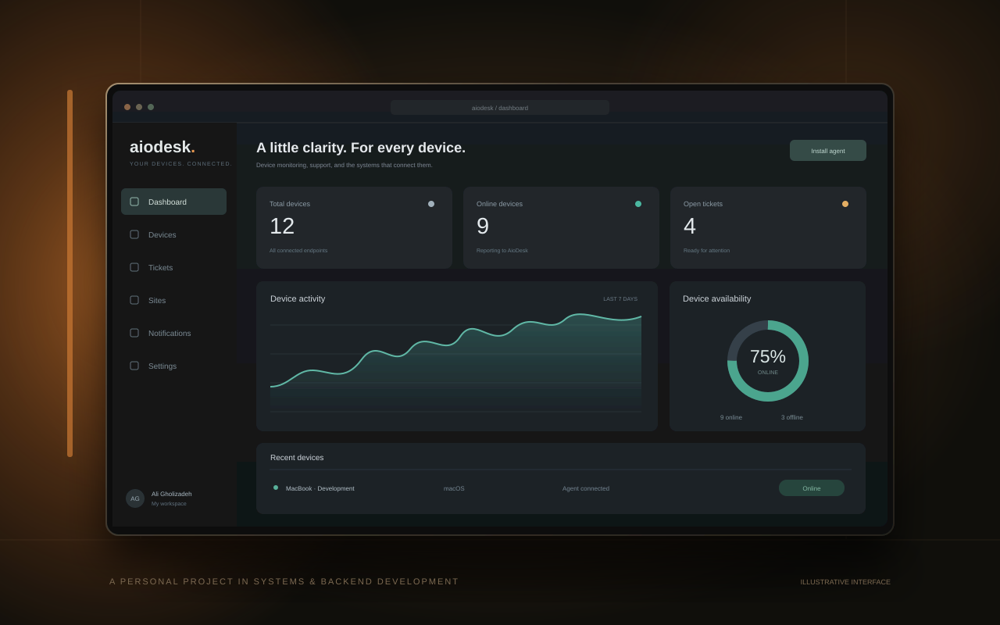
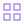
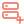

AIODESK / CONCEPT VISUALPERSONAL PROJECT · IN DEVELOPMENT
AioDesk01
A help desk. A device agent. A reason to keep learning.
COMPUTER SCIENCE STUDENT & BUILDER
Curiosity, turned into code.
I'm Ali. An aspiring backend developer learning
to build thoughtful systems, one project at a time.
Backend developer in the making
01 / A LITTLE ABOUT ME
Make it work.
Understand why.
I'm a Computer Science student at Kharazmi University, drawn to the logic behind the interface.
My focus is backend development with Python. I'm learning Django through a hands-on web development course, and putting object-oriented programming, design patterns, and unit testing into practice.
AioDesk is where a lot of that curiosity becomes concrete: devices, APIs, sessions, databases, and background jobs—all parts of one system I can build and understand.
I enjoy solving problems, exploring new technologies, and learning alongside other people. Most days, you'll find me working in Linux or macOS, making the next small thing work a little better.
02 / SELECTED PROJECTS
One ongoing project.
A lot of things to figure out.
That's exactly the point.

AIODESK / CONCEPT VISUALA help desk. A device agent. A reason to keep learning.
03 / EDUCATIONS
Formal education, hands-on learning,
and the space where they meet.
B.Sc. in Computer Science
Sampad · Mathematics
THE TOOLKIT

Design patterns
Server+04 / CONTACTS
A project idea, a learning opportunity, or a conversation about building things—I'd love to hear from you.